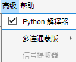
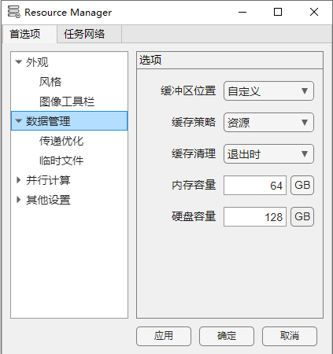
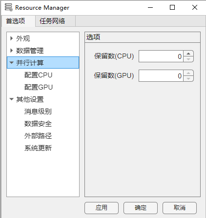
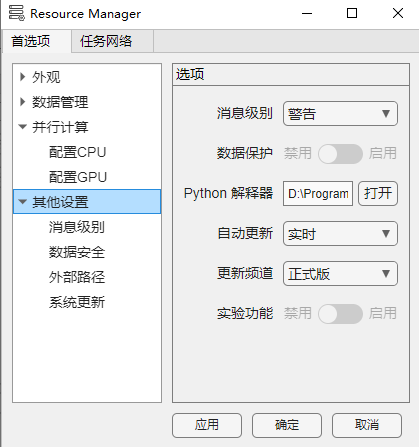
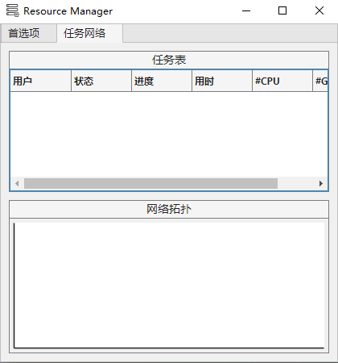

1.4.1 资源管理
资源管理包含两个组分：首选项 与 任务网络。您可以通过首选项调整程序的行为或使用任务网络观测当前正在进行的任务。
1. 首选项
   
您可以选择左侧栏目，并调整右侧对应选项。
外观 - 存储视图：“现代”包含窗体拉伸逻辑，“经典”始终显示完整存储视图。
外观 - 简单统计：启用该选项允许您通过片层浏览器中的交互式工具完成指定ROI内的基本描述性统计。详见 图像交互工具条
外观 - 自动模板：启用该选项允许您通过片层浏览器中的交互式工具自动识别平均梯度最大的体积图像作为模板帧。详见 图像交互工具条
数据管理 - 缓冲区位置：“自定义”选项允许您手动调整每个数据的存储位置，或者选择“自动”，此时将由程序决定缓冲区的位置。
数据管理 - 缓存策略：“性能”选项优先缓存所有数据以保证用户操作流畅度，“资源”尽可能使用实时计算代替数据缓存以节约缓冲区（大文件建议使用），或者您可以选择“平衡”以折中需求。
数据管理 - 缓存清理：推荐选用“退出时”，这将在程序退出时自动清空您的缓冲区以保证程序后续正常工作。
数据管理 - 内存/硬盘容量：您可以根据需要调整您的在内存及硬盘上的缓冲区大小。服务器公共资源约束您的内存缓冲区不超过96GB，硬盘缓冲区不超过256GB.
并行计算 - 保留数(CPU/GPU)：您可以选择保留部分 CPU 或 GPU 核心，这有助于提升您本地进行除配准外的多任务（WORD / PPT / EXCEL ...）处理时的流畅度。
其他设置 - 消息级别：您可以选择不同的消息级别以控制程序对您的通知。“错误”意味着程序仅在发生无法运行的严重错误时会通知您。
其他设置 - 数据保护：启用数据保护将对您的项目中的指定敏感数据进行加密保护。（Version >= V5.0.0 release）
其他设置 - Python解释器：您可指定python可执行文件路径以自定义python运行环境。推荐带有numpy与tifffile包以加速读写 tif 格式图像。
其他设置 - 自动更新：“实时”或“每天”选项适用于希望尽快获取新特性并修复可能BUG的用户，“启动时”仅在每次程序启动时检查更新。
其他设置 - 更新频道：更新频道分为“正式版”，“预览版”及“所有”。“正式版”通道仅推送稳定版更新（推荐）。“预览版”及“所有”也推送正在进行功能测试的不稳定版本。
其他设置 - 实验功能：当您正在使用“预览版”程序，启用“实验功能”允许您体验最新功能，您也可以关闭该选项，程序行为将与最后一次推送的“正式版”保持一致。（Version >=V4.2.0）
2. 任务网络

任务表显示当前正在使用资源的用户状态，网络拓扑作为资源使用的可视化。
任务网络的可见性采用“参与原则”。当且仅当您启动一个“配准”任务后，任务网络中的其他任务对您可见，同时您的任务也对其他用户可见。